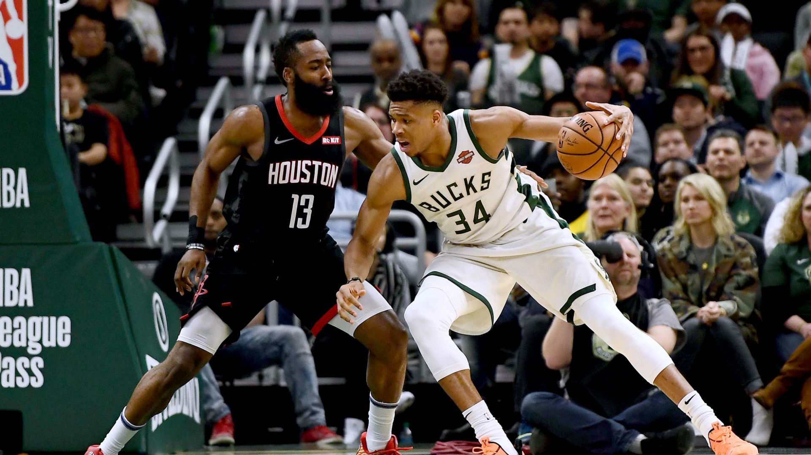

My hobbies
First of all I want to say that I have not a lot of hobbies. I Mostly prefer sports. However, to sit for a couple of hours at the computer or at the book studying something new I really like.
Football
I play football with average. As a child I went to the football section. I liked to play football. I often went to competitions and played for the city in which I lived. I have a lot of medals and diplomas. However, now football has stopped playing, since study takes most of the time.
Basketball
I also started playing basketball at school. I did not achieve great success in this sport, although I really like playing basketball. I was at basketball games several times. This time is unforgettable, it was very funny. At the moment this is my favorite hobby. The subject of physical education will appear in the second semester, I want to go to the basketball section, and later to play in the university team.
Jogging
I like sports very much, especially running. I run almost every morning. I have never done this professionally. I just like to run, and it brings me pleasure. I often run with friends. I like to participate in marathons, most often I do it with friends. I started running at the age of 14, when I read an article about the benefits of running. And what are the advantages in daily runs.
Swimming
I also started swimming at school. In the city in which I live there is a lake and in the summer I spend a lot of time there. Professionally never engaged. But in this sport I'm not new. Swimming is one of the sports that develops the endurance of the whole organism. For me, swimming is a great way to relax from all the fuss.